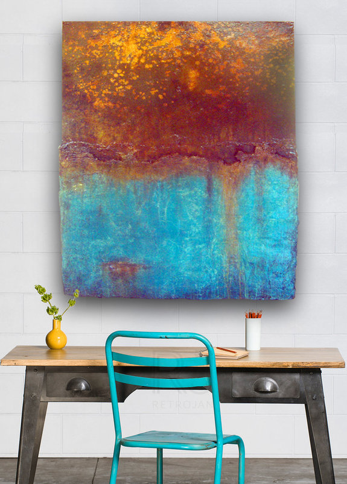
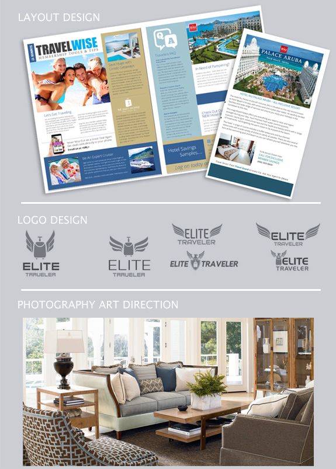

- Douglas Lail
- Home
- Experience
- Art
My home and studio are located in Asheville, NC.
I'm a graduate from AB Tech with a degree in Medical Laboratory Technology and a degree in Advertising/Graphic Design from Guilford Technical Community College. I also studied under acclaimed portrait artist James Daniel.
I have over 18 years of experience as a graphic designer and 10 years of experience as a professional abstract artist. I have exhibited work in a number of solo shows in and around Asheville, as well as shown in galleries throughout the Southeast.
Over the last 18 years in the marketing field, I have had the opportunity to work on a wide range of projects across many different industries bulding and honing my design skills along the way, I feel my strongest skill sets and abilities are in:
Below are a few examples of my work.
